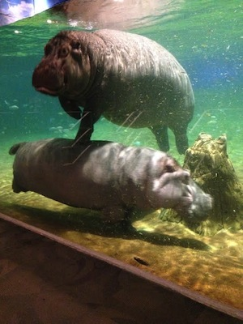

Atlantis In New Jersey
 it comes to tourist attraction in the southern part of New Jersey, Atlantic City would be the go to spot when it comes to vacation and entertainment. Camden, New Jersey isn't the ideal spot for tourist to go on vacation. NBA basketball team the Philadelphia 76ers practice facility, Freedom Mortgage Pavilion and the Battleship New Jersey Museum & Memorial are some of the highlights for the city of Camden. However there's an attraction in Camden that can bring an entire family together and arguably the main reason why a tourist would visit Camden is which is the Adventure Aquarium. I call it "Atlantis in New Jersey" because its a hidden gem in a city that's often in the news for negative reasons. If theres one place in Camden I would tell a tourist to visit, it would definitely be The Adventure Aquarium aka "Atlantis". You'll find yourself immersed underwater engaging in interactive touch exhibits and exploring over 15,000 aquatic species. Those species includes different types of sharks, green & loggerhead turtles and two species of warm-weather penguins. The highlight of The Adventure Aquarium though is that it's the ONLY aquarium in the world to exhibits Hippos! I would recommend any person who is visiting Camden, New Jersey to go to the Adventure Aquarium. They're located at 1 Riverside Drive in Camden, NJ and they're open from 10 AM to 4PM Monday through Friday. Saturdays and Sundays its 9:30AM to 5PM and 11AM to 5PM respectively. Below there's a map that shows the area where The Adventure Aquarium is located at. There isnt much to do in the city but one bright spot is The Adventure Aquarium aka "Atlantis".
Tourists won't be disappointed if they take the opportunity to visit The Adventure Aquarium. Right across the Delaware River from the aquarium is The Liberty Bell, The Edgar Allan Poe National Historic Site, The Magic Gardens and The Smithsonian Institute in Philadelphia,PA.